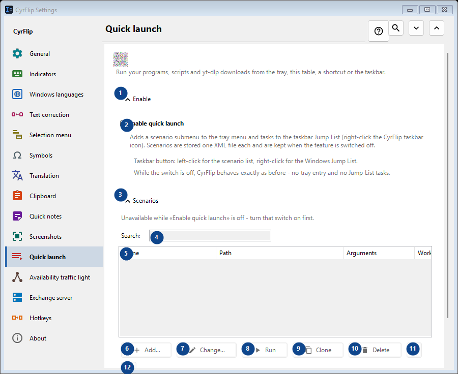
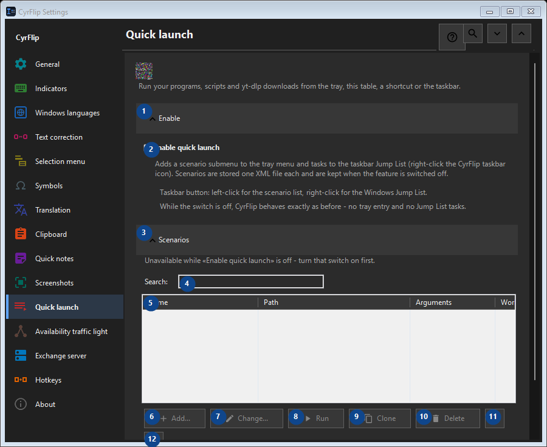

Quick launch
What this is for
Run your programs, scripts and yt-dlp downloads from the tray, this table, a shortcut or the taskbar.


In this order
Settings apply immediately. There is no required order; use the groups below.
The elements
1. Enable
Use this command when you need the action named above. Review any confirmation before accepting it.
Your shortcuts2. Enable quick launch
Adds a scenario submenu to the tray menu and tasks to the taskbar Jump List (right-click the CyrFlip taskbar icon). Scenarios are stored one XML file each and are kept when the feature is switched off.
Your shortcuts3. Scenarios
Use this command when you need the action named above. Review any confirmation before accepting it.
Your shortcuts4. Search
Unavailable while «Enable quick launch» is off - turn that switch on first. This control is currently unavailable. Enable its feature or select an entry first.
Your shortcuts5. Quick launch
Unavailable while «Enable quick launch» is off - turn that switch on first. This control is currently unavailable. Enable its feature or select an entry first. Name / Path / Arguments / Working folder / Admin / Shortcut
Your shortcuts6. Add...
Unavailable while «Enable quick launch» is off - turn that switch on first. This control is currently unavailable. Enable its feature or select an entry first.
Your shortcuts7. Change...
Unavailable while «Enable quick launch» is off - turn that switch on first. This control is currently unavailable. Enable its feature or select an entry first.
Your shortcuts8. Run
Unavailable while «Enable quick launch» is off - turn that switch on first. This control is currently unavailable. Enable its feature or select an entry first.
Your shortcuts9. Clone
Unavailable while «Enable quick launch» is off - turn that switch on first. This control is currently unavailable. Enable its feature or select an entry first.
Your shortcuts10. Delete
Unavailable while «Enable quick launch» is off - turn that switch on first. This control is currently unavailable. Enable its feature or select an entry first.
Your shortcuts11. Move up
Unavailable while «Enable quick launch» is off - turn that switch on first. This control is currently unavailable. Enable its feature or select an entry first.
Your shortcuts12. Move down
Unavailable while «Enable quick launch» is off - turn that switch on first. This control is currently unavailable. Enable its feature or select an entry first.
Your shortcuts13. Export...
Unavailable while «Enable quick launch» is off - turn that switch on first. This control is currently unavailable. Enable its feature or select an entry first.
Your shortcuts14. Import...
Unavailable while «Enable quick launch» is off - turn that switch on first. This control is currently unavailable. Enable its feature or select an entry first.
Your shortcuts15. Import from OneClickRunner...
Unavailable while «Enable quick launch» is off - turn that switch on first. This control is currently unavailable. Enable its feature or select an entry first.
Your shortcuts